Lead optimization pipeline
Resolved 1M+ CRM leads into 776K vendor groups, removed 440K non-viable leads (up to 1.9M calls saved), and re-sourced with card-network signals — lifting conversion +30%.
Read case study →Projects
A curated set of the systems I’ve designed and shipped. The public repositories are anonymized showcases of production work — architecture and patterns, without internal data.
Resolved 1M+ CRM leads into 776K vendor groups, removed 440K non-viable leads (up to 1.9M calls saved), and re-sourced with card-network signals — lifting conversion +30%.
Read case study →
Migrated a 200+ TB enterprise warehouse to an Apache Iceberg lakehouse on Trino via a zero-repoint hot swap, with automated SQL translation and parity validation. 100% object parity, 60% cost cut.
Read case study →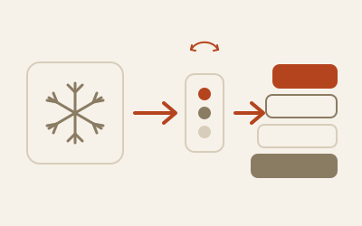
Integrated Divvy’s Snowflake workloads into BILL’s Starburst and Apache Iceberg lakehouse under Sarbanes-Oxley (SOX) controls, with per-object parity, governed consumer cutover, and about $165K in annualized savings.
Read case study →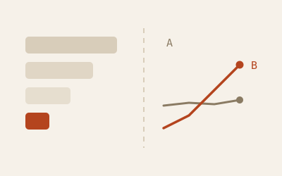
The measurement stack behind 18+ onboarding A/B tests: exposure pipelines, a governed metrics layer, and templated Tableau readouts. 15 concluded wins rolled out, $23.4M estimated annual impact attributed.
Read case study →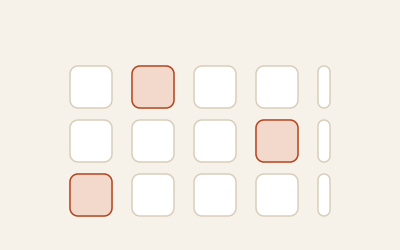
Production dbt-Snowflake project running ~1,000 models across 37 scheduled CronJobs, orchestrated with Helm and credentials injected from Consul and AWS Secrets Manager.
View on GitHub →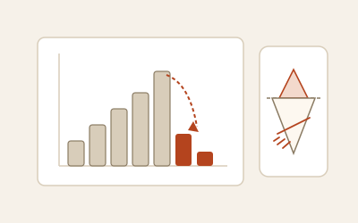
A 1.5 PB bucket growing 14x in six months, diagnosed to a 3.3× storage multiplication from zero Iceberg maintenance — then a five-workstream program with nightly compaction, snapshot expiry, and orphan cleanup. First full month after rollout: −70%.
Read case study →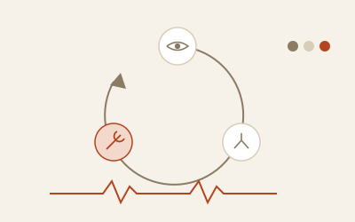
Closed-loop reliability for dbt: a lineage builder maintains a staleness control table, and an hourly healer rebuilds only stale P0/P1 models — per-cycle caps, dry runs, blocked-by-source detection, and an auditable state table, with traffic-light Slack alerts.
Read the writeup →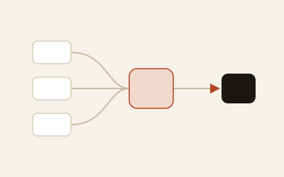
Custom Airflow operators that run dbt in ECS/Fargate from AWS MWAA, with a local Docker fallback and debug DAGs for Secrets Manager, container state, and Starburst connectivity.
View on GitHub →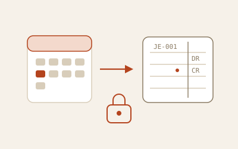
Day-1 close automation: a business-day-aware Airflow DAG driving config-driven AWS Glue jobs — monthly report tables, processor virtual-card revenue normalization, and NetSuite journal-entry CSVs, all landed to S3 under KMS encryption.
View on GitHub →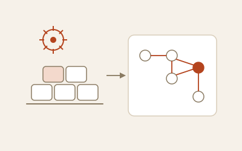
Local Airflow + dbt runtime in Docker: an orchestration image and a slim dbt CI image over a Postgres warehouse, with artifact validation and a DAG factory — including a step-by-step walkthrough of shared scheduling policy and overrides.
View on GitHub →Incremental dbt models over Starburst query metadata that rank 1,000+ tables by real usage — feeding a prioritized context list to a “talk-to-your-data” AI assistant.
View on GitHub →A modular DataOps framework that applies a controls scorecard for validation, governance, and observability across pipeline stages using open-source tooling and CI/CD.
View on GitHub →Took a solar analytics warehouse of 4K+ dbt models and multiple Internet of Things (IoT) ingestions from no observability to full coverage, cutting data downtime by 45%: freshness service-level agreements (SLAs), count reconciliation, catalog coverage, and transition-based alerting. Explore the four live scorecards.
Read case study →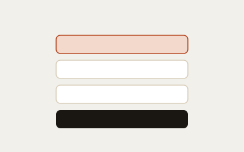
Scheduled maintenance for a Trino + Iceberg warehouse: Iceberg table optimization, orphan-object detection against the dbt manifest, and safe cleanup of lower environments.
View on GitHub →A pipeline that collects merge-request metrics across N GitLab repositories, computes per-author line stats from diffs, and writes them incrementally to a Trino analytics table.
View on GitHub →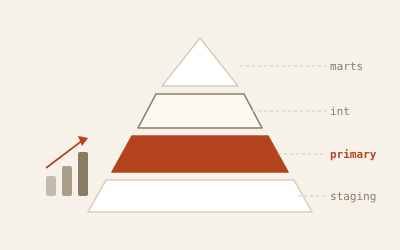
Stopped model sprawl with a governed single-source-of-truth layer between staging and marts: overlapping vendor dimensions consolidated into one, a multi-hour build cut to well under 20 minutes, and a manifest-parsing Airflow DAG measuring adoption daily by domain and layer.
Read case study →Reusable analytics-engineering patterns — idempotent month-control incremental models, date spines, dynamic SQL generation, and post-hook maintenance macros.
View on GitHub →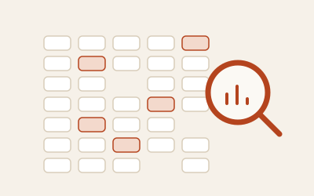
Automated data profiling as an ingestion gate — a deliberately messy contact extract, 10 alerts raised automatically, each mapped to a concrete quality rule. Explore the live interactive report.
Read case study →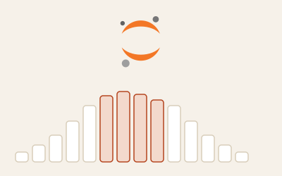
Estimated the monthly volume an outreach campaign would convert — 10,000-trial sweeps over a merchant lead pool, reported as distributions with best/worst-case bounds. Includes a live in-browser simulator.
Read case study →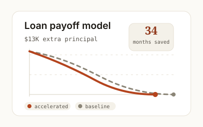
Converted a raw calculator notebook into a fixed-rate payoff analysis: baseline versus configurable N-month extra principal, payoff-date delta, lifetime interest avoided, and a live balance chart.
Read case study →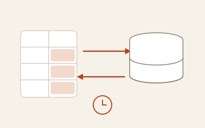
Self-serve Google Sheets ingestion: one function turns any sheet URL into a typed DataFrame, and snapshot diffing turns API pulls into exact insert/update/delete change capture — landed as Parquet for dbt.
Read case study →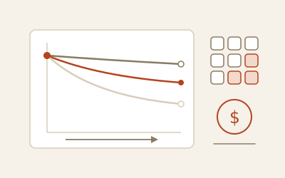
The North Star Metric for a check-to-virtual-card program: change-log CDC turned into enrollment history, dbt-style marts under a 100 GB scan cap, and 3-month cohort retention with activity and enrollment lenses separated.
Read case study →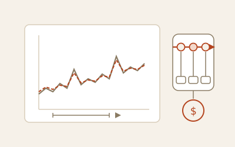
An LSTM built by the book, evaluated honestly: 3x below the desk heuristics on a held-out year, a statistical tie with a linear baseline on identical inputs, and a ship-the-cheaper-model verdict with explicit switch criteria.
Read case study →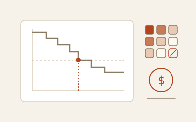
Pricing the check-to-virtual-card program: survival curves by segment and channel (median 19 months on the rail), CLV four ways, and per-channel conversion spend ceilings that flagged one channel as value-destroying.
Read case study →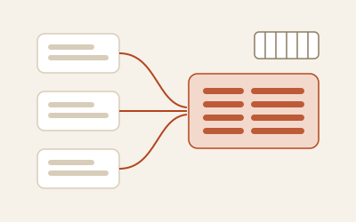
A freight forwarder’s undocumented extracts explored in DuckDB — profiling SQL generated from DDL, key forensics, one big table, lasso revenue-driver decomposition, margin deciles, and retention flow.
Read case study →
Predicted which of 175K credit-union members would need a vehicle loan within 60 days: 57 predictors from 4 systems, a 25-algorithm bake-off, thresholds priced per campaign channel, 10K+ marketing leads.
Read case study →Notes & references
Working references I keep while building — patterns, query snippets, and platform notes.